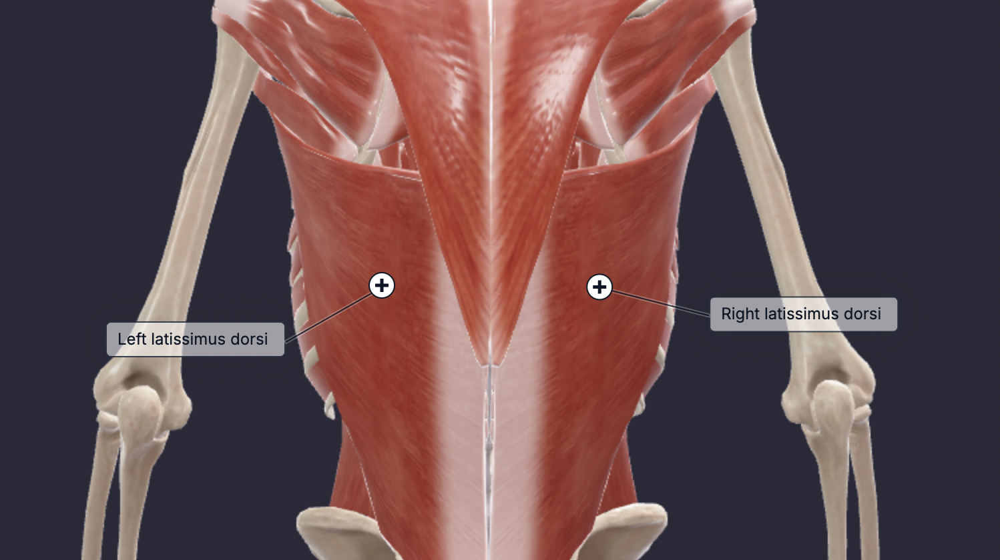

The latissimus dorsi, or lats, is a broad, flat muscle covering most of the posterior thorax. Its primary function involves upper extremity movement. As a scapular motion muscle, it pulls the scapula's inferior angle in various directions, facilitating shoulder joint movements such as internal rotation, adduction, and arm extension. Although a single large muscle, the lats can be functionally divided into upper and lower regions based on fiber orientation: the upper fibers run more horizontally, and the lower fibers more vertically. This distinction suggests a functional bias in training focus, despite limited scientific evidence supporting this approach.
It is best to have an exercise where you adduct your shoulders (bring your arms towards your body) and extend your shoulders (bring your arms behind your body). To do so, you should have an exercise where you pull in the frontal plane and one where you pull in the saggital plane.
Pick one exercise for the frontal plane and the saggital plane and perform 2-3 sets per exercise based on your preference.
